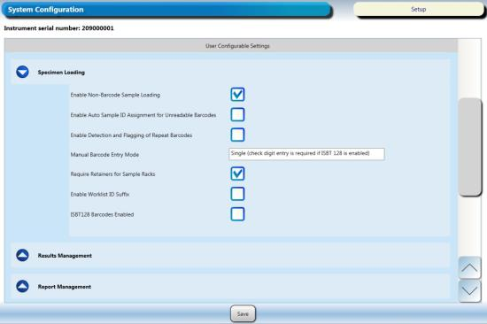
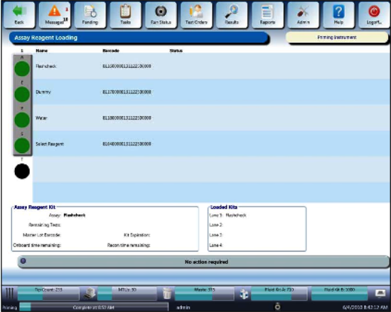
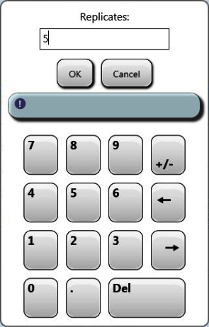
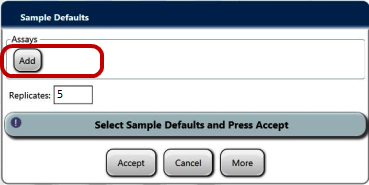
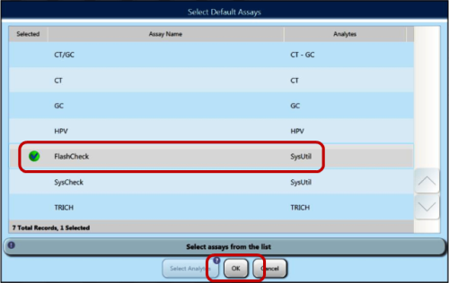
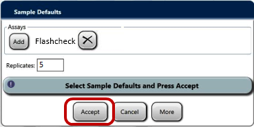
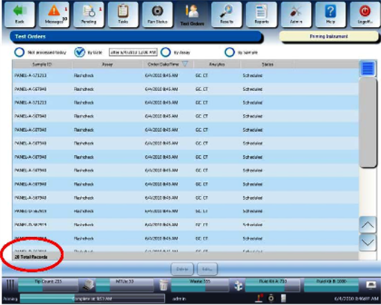
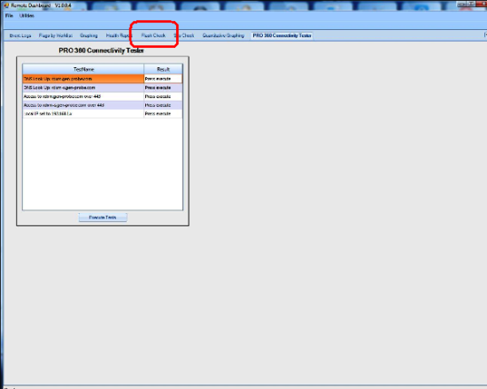
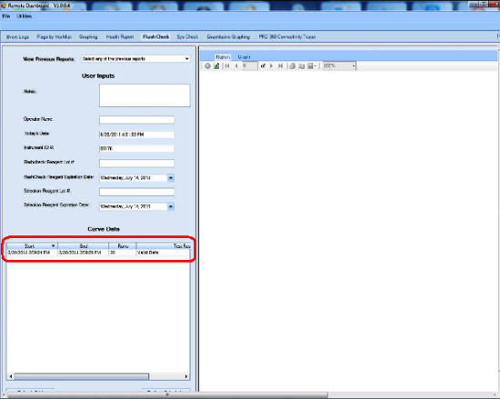
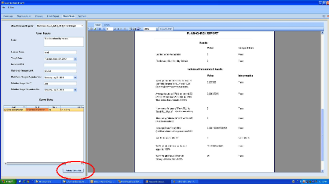

Flashcheck - Lumo Injector Verification Procedure
Purpose
To verify the Panther Detection System operation is in compliance with performance validity and acceptance criteria.
Scope
The Flashcheck Reagent is intended to be used for performing a Quality Control verification test of the Auto Detect fluid pumps and injectors of the Panther Luminometers as part of new system manufacturing and/or existing system service/maintenance procedures.
The use of the Flashcheck Reagent effectively assesses the Panther System detection injection system.
Flashcheck is required for all Panther installs if the customer will run TMA Transcription-mediated amplification—Hologic's patented nucleic acid amplification technology. assays.
Transcription-mediated amplification—Hologic's patented nucleic acid amplification technology. assays.
If installing a Panther that is ONLY going to run Real Time Assays or installing a Panther Fusion that will ONLY run PCR assays, then a Flashcheck is NOT required on installation.
Time Required
- 45 minutes
Flashcheck FSE Kit
 Required Tools and Materials
Required Tools and Materials
Description Quantity Flashcheck Reagent FSE Kit (Refer to the Flashcheck FSE Kit package insert) 1 Empty Sample Tubes 4 DI water

Note—See the Storage Instructions section in the Flashcheck FSE Kit package insert. APTIMA Assay Fluids
Reagents Material Number Auto Detect 1 LR0167G-01 or equivalent Auto Detect 2 LR0148G-01 or equivalent Oil LR0354 or equivalent Wash Solution LR0356 or equivalent Buffer for Deactivation Solution LR0355 or equivalent
Preparation
- Place tape or a label on one side of each tube.
- Place the four taped sample tubes in the first four positions of a sample rack. Ensure the tape on each sample tube is blocking the barcode on the inside of each sample rack slot.
Note—Alternatively, if a Syscheck was just completed, the four Syscheck Reagent tubes could be used here as long as the barcodes are facing away from the Barcode Reader
Extra Panel Tubes can also be used.

- Prepare the reagent bottles according to the Flashcheck Reagent FSE Kit Reagent Preparation section of the Flashcheck Reagent FSE Kit package insert.
- Amplification bottle, contains the Flashcheck Assay
Note—This bottle needs to be reconstituted. Ensure there are no bubbles.
- Enzyme bottle, remains empty
- Probe bottle, fill 3/4 full of DI water
- Select bottle, contains the Select Assay Reagent
- TCR
(The lids are removed prior to loading in the Reagent Bay.)
- Amplification Reagent position
- Enzyme Reagent position
- Probe Reagent position
- Select Reagent position

Procedure
- Power on the Panther System and PC.
- Start Panther Main.
- Disable LIS Communication.
Display the customer configuration settings by selecting the Admin tab, then System Configuration, then the drop-down menu for Specimen Loading.
- Enable Non-Barcode Sample Loading
- Enable Auto Sample ID Assignment for Unreadable Barcodes
- Enable Detection and Flagging of Repeat Barcodes

- CHECK Enable Non-Barcode Sampling Loading
- UNCHECK Enable Auto Sample ID Assignment for Unreadable Barcodes
- UNCHECK Enable Detection and Flagging of Repeat Barcodes

- Click Save.
- Navigate to the Tasks screen and perform the following Tasks (as needed) according to the Panther System Operator's Manual.
- Load Tips
- Load MTUs
- Load Universal Fluids
- Empty Waste
- Click the Prime

- Open the Reagent Bay door, and

- Close the Reagent Bay door, and

- Open the TCR door and place the empty, labeled TCR bottle in the TCR Carousel Slot 1 (use a TCR Carousel adapter if necessary) with the barcode visible. The Reagent Bay lane and the TCR slot have to match.
- Shut the TCR door, then wait for the Carousel to scan and the TCR indicator to turn green.
- The reconstitution screen date displays when the scan is successful.
- Click on the Calendar icon to enter the current date and click OK.
- Click Accept. This will take put you back on the Assay Reagent Screen.
- From the Tasks screen, click Load Samples.
The Sample Rack Bay screen appears.






- Ensure a sample rack lid is installed on the rack with the 4 sample test tubes (with blank labels or tape applied).
Note—If you have just performed a Syscheck, you can reuse the rack with the 4 SysCheck reagent tubes, just turn the barcodes so they are not visible.
- Open the Sample Bay door and wait for

- Load the Sample Rack into the first lane and close the door.
- Verify the Sample Rack indicators turn green.
Note—You may have to select “By Date” to see the Test Orders instead of having “Not processed today” selected.

- The Flashcheck Reagent sequence begins automatically.
Note—If the sequence does not begin after a few minutes, verify all the items in the Task screen have been highlighted green or navigate to the Pending screen.
- The Flashcheck sequence takes approximately 20 minutes to complete.
- Set the Sample Replicates back to 1.
- If applicable, Enable LIS Communication.
- Set Sample Handling Configuration to customer's configuration recorded in Step 4.
- Proceed to General Data Analysis and Result Interpretation
General Data Analysis and Result Interpretation
- Data Analysis and Result Interpretation via Flashcheck Spreadsheet
- Data Analysis and Result Interpretation via Panther Remote Dashboard
- Launch the Panther Dashboard software.


- Click the Flashcheck tab.

- If the system runs HPV or Parvo, select YES from the HPV USED dropdown menu. Select NO if neither HPV nor Parvo is run on this system.

- Select the data set to be analyzed.

- Click Perform Calculation.
A Flashcheck report is generated containing the pass/fail criteria for the run.
- Save Flashcheck report and attach to applicable service record.
Acceptance and Validity Criteria
Note—All the following Acceptance Criteria and Run Validity are presented by the Dashboard software Flashcheck application. Run Validity
If one outlier is identified by the Dashboard software Flascheck process, the system will automatically remove that outlier and recalculate the Flashcheck Reagent results.
If the resulting calculation still fails, then the final determination will be failed.If using the manual spreadsheet, the formulas in the cells will indicate pass/fail.
Acceptance Criteria
Criteria Old New Comments Average I3 ≥ 0.10 ≥ 0.16 This new criterion reduces Kinetic Index failures when running HPV. Average I25 ≤ 0.0007 N/A N/A An average I25 is no longer needed. Individual I25 ≤ 0.0010 ≤ 0.0014 This new criterion has been expanded. A passing HPV PQ Non-HPV/Non-Parvo Systems
- The luminometer should produce a valid run with data from the Flashcheck Worksheet indicating all of the following results:
- Average fraction of Total RLU
- Average fraction of Total RLU at interval 25 ≤ 0.00140
- %CV at Interval 25 ≤ 100
- Highest %CV of intervals 26 through 50 ≤ 120
- For the pumps and injectors to be acceptable:
- Average fraction of the Total RLU at interval 3 ≥ 0.00500
- Average fraction (based on 4 replicates) of Total RLU at interval 25 ≤ 0.00140
- The Panther Luminometer Flashcheck Reagent Verification procedure is considered PASS if each individual Result Interpretation on the Spreadsheet passes. A “FAIL” result is not acceptable.
Parvo Systems
- The luminometer should produce a valid run with data from the Flashcheck Worksheet indicating all of the following results:
- Average fraction of Total RLU at interval 3 ≥ 0.100
- Average fraction of Total RLU at interval 25 (N/A)
- Individual interval 25 value ≤ 0.0014
- %CV at Interval 25 ≤ 100
- Highest %CV of intervals 26 through 50 ≤ 120
- For the pumps and injectors to be acceptable:
- Average fraction of the Total RLU at interval 3 ≥ 0.160
- Average fraction (based on 20 replicates) of Total RLU at interval 25 (N/A)
- Individual interval 25 value ≤ 0.0014
- The Panther Luminometer Flashcheck Reagent Verification procedure is considered PASS if each individual Result Interpretation on the Spreadsheet passes. A “FAIL” result is not acceptable.
Retest Criteria
- If the initial test results do not meet acceptance criteria, repeat the Panther Luminometer FlashcheckReagent Verification.
Repeat runs must meet acceptance criteria.
Document any and all failed and passed Flashcheck Procedures in the applicable service
Note—Failure to meet acceptance criteria after repeat performance may indicate faulty performance of equipment. If necessary, replace the suspected faulty equipment, repeat performance of the Flascheck verification test, and evaluate results. If this is an Installation, continue to Panther System Performance Qualification (PQ) Procedure.
 button at the top of the page to send feedback, comments, or change requests.
button at the top of the page to send feedback, comments, or change requests.